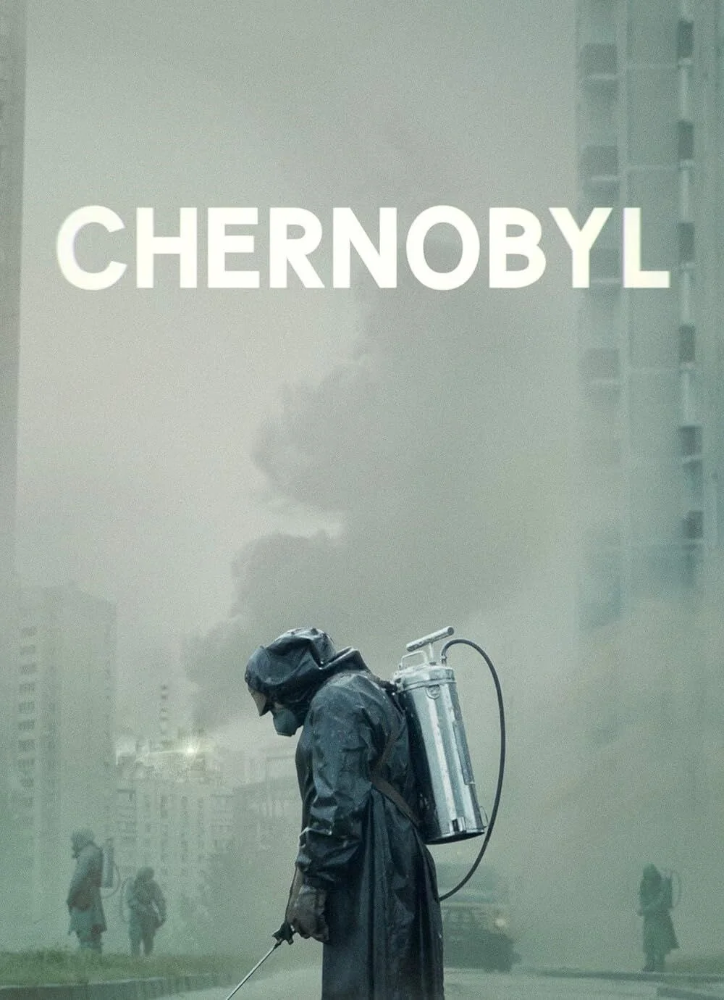

|

|
Chernobyl
Chernobyl, İngiliz-Amerikan yapımı beş bölümlük tarihi drama türünde çekilen TV mini dizisidir. Dizi Craig Mazin tarafından yaratılıp yazılmıştır. Yönetmeni ise Johan Renck'dir. Jared Harris, Stellan Skarsgård, Emily Watson ve Paul Ritter gibi isimler dizinin oyuncu kadrosunu oluşturmaktadır. Chernobyl, Amerikan kablo kanalı HBO ile İngiliz televizyon kanalı Sky'ın ortak yapımıdır. Dizinin ilk bölümü ABD'de 6 Mayıs 2019'da, Birleşik Krallık'ta 7 Mayıs 2019'da yayımlanmıştır. Dizi, Nisan 1986'da Sovyetler Birliği'nde meydana gelen Çernobil faciasını ve ardından gelen tasfiye girişimlerini ele almaktadır.
|